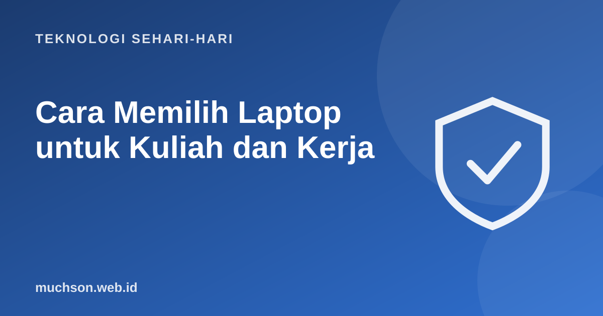

Beranda › Artikel › Teknologi Sehari-hari
Teknologi Sehari-hariCara Memilih Laptop untuk Kuliah dan Kerja
Brosur laptop penuh angka dan istilah: Core i5, Ryzen 7, 16 GB, 512 GB NVMe, IPS, 60 Hz. Mudah tergoda membeli yang angkanya paling besar, atau sebaliknya membeli yang paling murah lalu menyesal setahun kemudian. Panduan ini membantu Anda membaca spesifikasi dan memilih yang pas dengan kebutuhan nyata.

Mulai dari kebutuhan, bukan spesifikasi
Membaca spesifikasi dengan mudah
| Komponen | Analogi | Yang perlu diperhatikan |
|---|---|---|
| Prosesor (CPU) | Kecepatan berpikir | Generasi lebih penting dari angka i3/i5/i7 saja. i5 generasi baru bisa lebih cepat dari i7 lama |
| RAM | Luas meja kerja | 8 GB minimal nyaman; 16 GB untuk pemrograman dan multitasking |
| Penyimpanan | Lemari arsip | Wajib SSD. 512 GB pilihan aman untuk 4-5 tahun |
| Kartu grafis (GPU) | Tukang gambar khusus | Hanya perlu terpisah untuk game, 3D, edit video berat, atau AI lokal |
| Layar | Jendela kerja | Panel IPS atau OLED, resolusi minimal Full HD, kecerahan cukup |
| Baterai | Bekal tenaga | Lihat ulasan pemakaian nyata, bukan angka maksimal di brosur |
| Bobot | Beban di tas | Di bawah 1,5 kg terasa ringan untuk dibawa setiap hari |
Cek apakah bisa diupgrade
RAM dan SSD yang disolder tidak bisa ditambah kemudian. Bila laptop memakai RAM solder, lebih baik membeli kapasitas yang cukup untuk 4-5 tahun sejak awal.
Rekomendasi per jurusan atau pekerjaan
| Kebutuhan | RAM | SSD | Catatan |
|---|---|---|---|
| Sosial, bahasa, hukum, administrasi | 8 GB | 256-512 GB | Prioritaskan baterai dan bobot |
| Teknik informatika, sistem informasi | 16 GB | 512 GB | Menjalankan editor, browser, database, kadang emulator |
| Statistik dan data | 16 GB | 512 GB | Data besar butuh RAM |
| Arsitektur, desain produk | 16-32 GB | 1 TB | GPU terpisah sesuai software (CAD, render) |
| Desain grafis dan video | 16-32 GB | 1 TB | Layar akurat warna, GPU sesuai software |
Hitung biaya per tahun
Daftar cek sebelum membayar
Satu tips terakhir: baca atau tonton beberapa ulasan independen untuk model yang Anda incar, terutama tentang baterai, suhu, dan kualitas layar. Angka di brosur sering diukur dalam kondisi ideal.
Tanya jawab
Berapa RAM laptop untuk kuliah?
Untuk sebagian besar jurusan, 8 GB cukup. Untuk informatika, data, dan desain, 16 GB lebih nyaman.
Apakah harus SSD?
Ya. SSD membuat laptop menyala dan membuka program jauh lebih cepat dibanding hard disk.
Intel atau AMD?
Keduanya baik. Bandingkan generasi dan ulasan model spesifik, bukan merek prosesornya saja.
Perlukah kartu grafis terpisah?
Hanya untuk game, desain 3D, edit video berat, atau beban kerja tertentu. Untuk dokumen dan pemrograman umum tidak wajib.